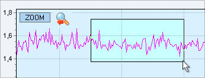
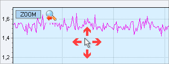
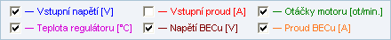

|
|
Funkce Monitorování zařízení umožňuje sledovat všechny provozní parametry zařízení (např. proud, napětí, teplota, otáčky apod.). Tyto parametry se z regulátoru či BMS načítají v reálném čase. Pro zobrazení průběhu parametrů slouží přehledný multifunkční graf, a podrobný textový výpis s hodnotami parametrů lze ukládat do tabulky ve formátu Excel nebo do textového souboru.
Seznam funkcí monitorování:
Tlaèítko spustí nebo ukonèí monitorování. Pokud je monitorování spuštìno, pak se z regulátoru èi BMS periodicky naèítají aktuální hodnoty zvolených parametrù, které se následnì zobrazují do grafu. Rychlost naèítání parametrù lze nastavit pomocí intervalu naèítání.
Vymaže všechna data monitorování vèetnì grafu. Tlaèítko se aktivuje až po ukonèení monitorování.
Uloží data monitorování do souboru ve formátu XLS (soubor lze zobrazit pomocí aplikace Microsoft Excel nebo LibreOffice) a do textového souboru TXT. Tlaèítko Uložit se aktivuje až po ukonèení monitorování. Do textového souboru se ukládají data z celého prùbìhu monitorování (od spuštìní monitorování po jeho ukonèení). Do Excel souboru se ukládají pouze data z èasového úseku, který je zobrazen v grafu.
1. Nástroje grafu U horního pravého okraje grafu je umístěn panel nástrojů s několika grafickými tlačítky:
Zvětšení (zoom) grafu
V grafu je možné zvětšit vybranou část, a to následovně: stiskněte a podržte levé tlačítko myši, poté pohybujte myší směrem doprava a dolů - vybraná oblast se zřetelně označí (viz. obrázek). Nakonec uvolněte stisknuté levé tlačítko - označená oblast grafu se zvětší. Tato funkce je užitečná pro podrobné prohlížení průběhu křivek v grafu.

Posunování (scroll) grafu
Pokud je graf v režimu zvětšení (zoom), pak je možné posunovat celou plochu grafu horizontálně i vertikálně, takto: stiskněte a podržte pravé tlačítko myši, a pohybujte myší libovolným směrem. Můžete si tak postupně prohlížet celý průběh křivek v grafu.

Legenda grafu
Po spuštìní monitorování (nebo naètení dat historie) se u spodního okraje grafu zobrazí legenda grafu - seznam parametrù (køivek) které se zobrazují v grafu. Každému parametru vždy odpovídá jedna køivka v grafu ve stejné barvì. - køivku je možné doèasnì skrýt pomocí zatrhávacího políèka u názvu parametru. - v grafu je možné najednou zobrazit maximálnì 9 parametrù. Výbìr parametrù, které se budou v grafu zobrazovat, se provádí v oknì Nastavení grafu.

2. Nastavení grafu Nastavení je spoleèné pro grafy monitorování i historie, a je podrobnì popsáno v této kapitole.
3. Záznam monitorování V průběhu monitorování se hodnoty všech parametrù prùbìžnì ukládají do souboru monitoring_XYZ.txt (kde "XYZ" je sériové èíslo USB modulu), který je umístìn ve složce Dokumenty\MGM ProTool\. Tento soubor se vytvoøí pøi každém spuštìní monitorování, a pokud už soubor obsahuje záznamy z pøedešlého monitorování, budou tyto záznamy vymazány. Záznamy (hodnoty všech parametrù) se do souboru ukládají ve stejném intervalu jako do grafu, viz. interval naèítání. Struktura záznamu: v prvním sloupci je uveden èas záznamu, v ostatních sloupcích jsou uvedeny postupnì hodnoty všech parametrù, a jednotlivé sloupce jsou navzájem oddìleny znakem TAB (tabulátor).
|